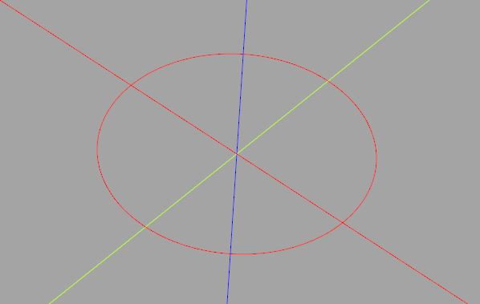
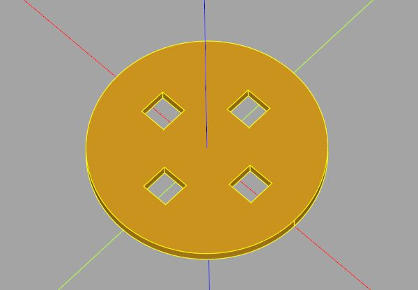
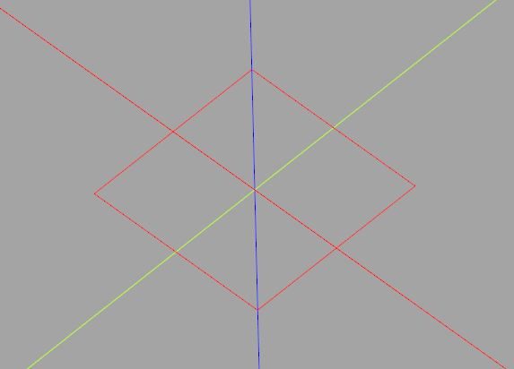
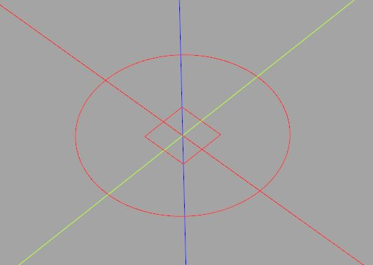
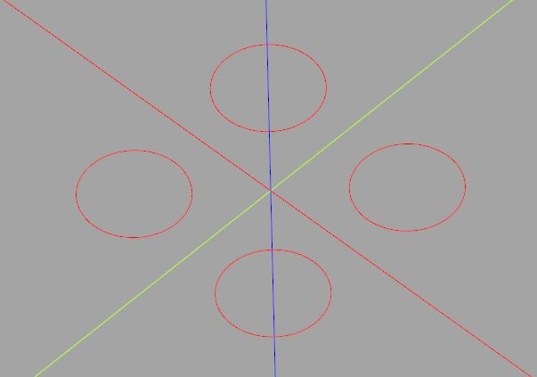
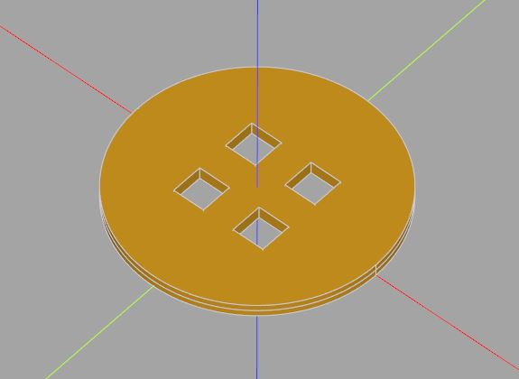

基本 2D 操作
November 25, 2021在 CadQuery 中，Workplane 提供了一組 2D 操作方法，必須知道的是，CadQuery 不具備 2D 繪圖的功能，它提供的 2D 操作建立的幾何資訊，目的都是為了用來建立 3D 實體。
OpenSCAD 可以做些 2D 繪圖，並輸出 SVG 之類的。
Wire 基礎
舉個最簡單的例子，Workplane 的 circle 可以用來建立圓：
import cadquery as cq
radius = 10
c = cq.Workplane().circle(radius)
這不是繪製圓，只是建立了圍成圓的線（Wire），雖然 CQ-editor 中會顯示一個圓，這只是為了便於檢視：

建立圍成特定形狀的線後，最常做的一個動作是進行擠出（extrude），這就像是透過建立的形狀，將牙膏擠出來，是從形狀構造 3D 實體最簡單的一個方式：
import cadquery as cq
radius = 10
thickness = 1
plate = cq.Workplane().circle(radius).extrude(thickness)
線其實可以做布林運算，不過在行為上，與其他繪圖軟體中很直覺的交集、聯集、減集操作並不相同，想知道為什麼，必須知道 CadQuery 的 BREP 觀念，以及相對應的物件該如何操作，這是個進階議題，之後文件再來談。
你會在 Workplane 上看到 intersect、union、cut 等方法，這些交集、聯集、減集的方法，是歸在 3D 操作，無法使用於 2D 概念的物件。
然而，2D 操作若構成了兩個以上的封閉曲線，若其中一個封閉曲線涵蓋了其他封閉曲線，在擠出時，其他封閉曲線會用來挖洞：
import cadquery as cq
radius = 10
thickness = 1
plate = (cq.Workplane()
.circle(radius)
.center(radius / 2, 0)
.rect(radius / 4, radius / 4)
.center(-radius / 2, radius / 2)
.rect(radius / 4, radius / 4)
.center(-radius / 2, -radius / 2)
.rect(radius / 4, radius / 4)
.center(radius / 2, -radius / 2)
.rect(radius / 4, radius / 4)
.extrude(thickness)
)
在上例中使用了 center 方法，用來設定繪圖的原點，指定的新位置是相對於目前的原點位置（而不是絕對位置，基本上，Worksplane 的座標指定都是相對於自身目前的座標系統），這會構成以下的 3D 實體：

檢視 2D 物件
如果在同一條方法鏈操作中建立了多個形狀，CQ-editor 只會顯示最後一次操作所建立的形狀。例如：
import cadquery as cq
radius = 10
plate = (cq.Workplane()
.circle(radius)
.rect(radius / 2, radius / 2)
)
這只會看到最後的方形：

如果需要檢視建立的多個形狀，就要個別顯示每次操作後的 Workplane：
import cadquery as cq
radius = 10
plate = cq.Workplane().circle(radius)
show_object(plate)
plate = plate.rect(radius / 2, radius / 2)
show_object(plate)
這樣就會顯示出兩個被建立的形狀：

2D 到 3D
2D 操作建立的幾何物件，除了可以用來進行擠出，也可以進一步作為其他形狀或實體建構的資訊之用，例如，可以在建立方形後，使用它的四個頂點作為建立圓的位置：
import cadquery as cq
radius = 3
width = 10
circles = (cq.Workplane()
.rect(width, width, forConstruction = True) # 幾何資訊會作為進一步建構之用
.vertices() # 取得頂點
.circle(radius)
)
這會在方形的四個頂點處建立四個圍成圓的線：

因此，類似方才要在圓盤中挖洞的需求，也可以用以下的程式碼來完成：
import cadquery as cq
radius = 10
thickness = 1
plate = (cq.Workplane()
.circle(radius)
.rect(radius / 2, radius / 2, forConstruction = True)
.vertices()
.rect(radius / 4, radius / 4)
.extrude(thickness)
)
這邊的重點在於 forConstruction 要設為 True，如此就能取得形狀的幾何資訊，例如透過 vertices 方法取得頂點位置，然後用這些位置建立新的形狀，這會產生以下的結果：

CadQuery 提供了 circle、rect 與 ellipse，可以建立圍成圓、方形與橢圓等形狀的線，更複雜的形狀，可以藉由其他方法來建立，這之後再來談。